行前準備懶人包
越南對台灣、香港旅客多為免簽證入境（一般可停留 15–45 天，實際天數與規定請於出發前至越南官方或使用的航空公司網站確認一次，政策偶有調整）。以下是這趟行程用得到的實用資訊。
🌦️ 天氣與穿著
胡志明市全年高溫多濕，5–10 月為雨季，常有「來得快、走得也快」的午後雷陣雨（約 30 分鐘–1 小時），11–4 月為乾季、較悶熱。
- 透氣快乾衣物、短袖為主，教堂／獨立宮參觀建議帶一件薄外套或圍巾遮肩
- 雨季必帶：輕便雨衣（比雨傘更適合騎車移動）、防水鞋或涼鞋
- 防曬乳、遮陽帽、太陽眼鏡；隨身小電扇會是救命神器
💵 貨幣與消費
幣別為越南盾（VND），面額大（常見到 50,000／100,000／500,000），付款前記得看清楚 0 的數量。匯率僅供參考，出發前請再查一次即時匯率：
- 約 1 美元 ≈ 26,000 越南盾
- 約 1 新台幣 ≈ 800 越南盾
市區可用信用卡／行動支付（Visa、Mastercard、Grab 內建支付），但傳統市場、路邊攤、小吃店仍以現金為主，建議隨身備妥小額鈔票。機場或市區正規找換店匯率通常優於飯店。
📶 網路與通訊
- 抵達機場可直接購買越南電信 SIM 卡（Viettel／Mobifone／Vinaphone 櫃檯都有），或出發前先買 eSIM，落地即可開通
- 多數咖啡廳、飯店提供免費 Wi-Fi
- 建議下載：Grab（叫車＋外送＋付款）、Google 地圖（離線地圖先下載市區範圍）、Google 翻譯（可拍照翻譯菜單）
🛵 市內交通建議
- 首選 Grab 叫車／叫機車：車資透明、可用越南盾或信用卡付款，上車前先核對車牌
- 路邊白牌計程車建議認明 Vinasun（白綠色）或 Mai Linh（綠色）兩大信譽品牌，上車前確認跳表
- 市區景點多集中在第一郡（District 1），彼此步行可達，但人行道常被機車佔用，過馬路時放慢腳步、保持穩定速度直行，車流會自然繞過你
- 湄公河屬市郊行程，建議參加當地一日團或包車，較省時省力；堤岸（Chợ Lớn）、玉皇殿等市區內景點搭 Grab 即可輕鬆抵達
- 本頁每個景點下方都附有 🗺️ Google 地圖 🍎 Apple 地圖 🚗 Grab 叫車 快速連結，手機點下去就能直接以目前位置為起點開始導航或叫車；若手機沒安裝 Grab App，Grab 連結可能不會有反應，屬正常現象
🛡️ 安全與注意事項
- 胡志明市偶有「飛車搶劫」（機車經過順手搶走手機／側背包），走在人行道時盡量將包包背在遠離馬路的一側，手機也不要邊走邊滑
- 景點、夜市周邊留意扒手，貴重物品不外露
- 緊急電話：警察 113／消防 114／救護車 115
- 如遇急難，可就近聯繫台北經濟文化辦事處（駐胡志明市）尋求協助，出發前建議先查好最新聯絡電話存入手機
🍜 飲食小提醒
- 越南美食代表：河粉 Phở、法國麵包 Bánh mì、生春捲 Gỏi cuốn、烤肉米線 Bún thịt nướng、越式咖啡（煉乳咖啡 Cà phê sữa đá、蛋咖啡 Cà phê trứng）
- 路邊攤衛生狀況參差，可挑選人潮多、翻桌快的攤位，並選擇熱食現煮
- 自來水不可生飲，飲用水以瓶裝水或飯店提供的煮水壺為主
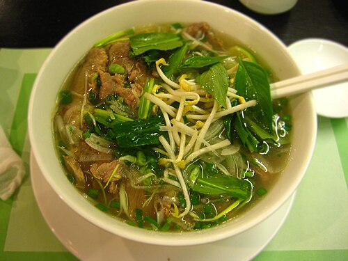
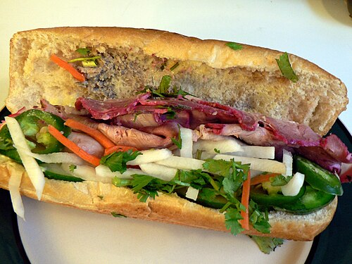
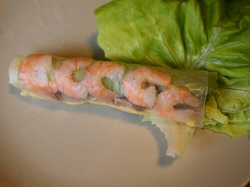
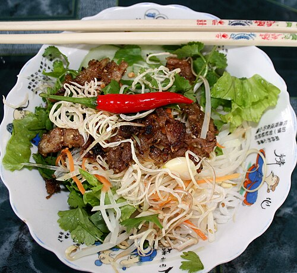
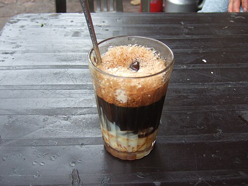
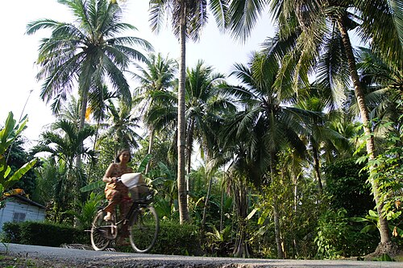
以上美食照片來源：Wikimedia Commons（示意圖，非店家實拍）
市中心經典景點｜法式古蹟散步日
今天全程集中在第一郡，景點彼此步行可達，走的是「歷史建築＋文青咖啡」路線。
濱城市場 → 書街 → 中央郵政局 → 統一宮 → 戰爭遺跡博物館 → 粉紅教堂 → 咖啡公寓
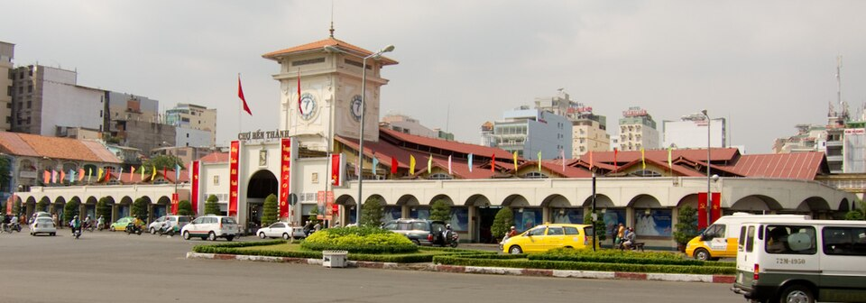
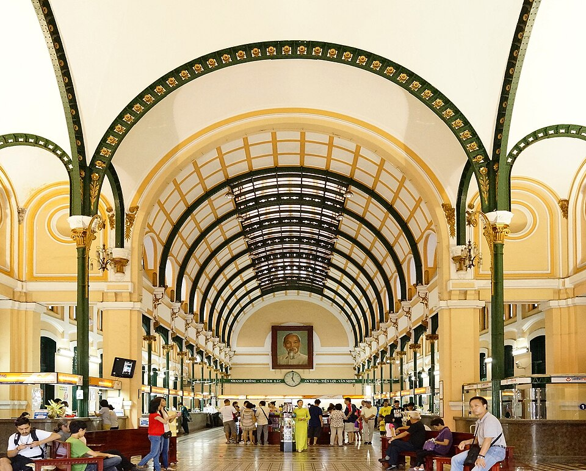
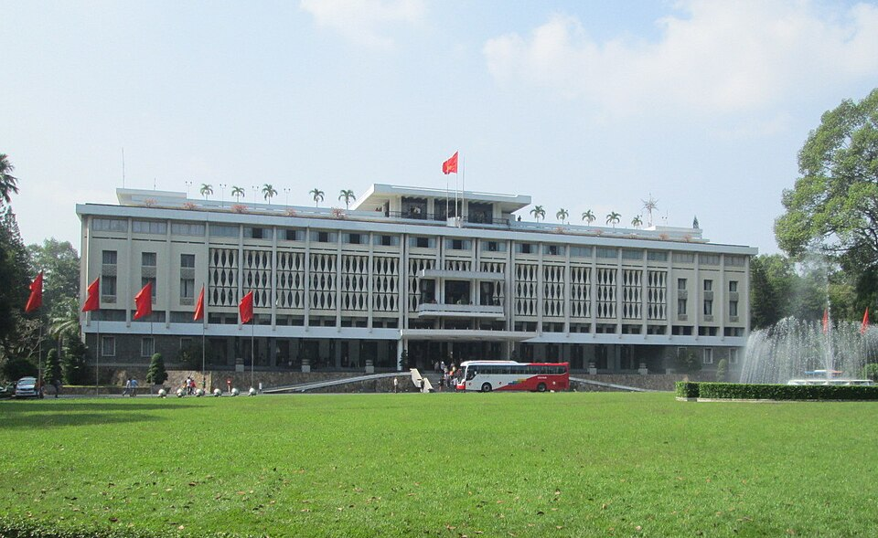
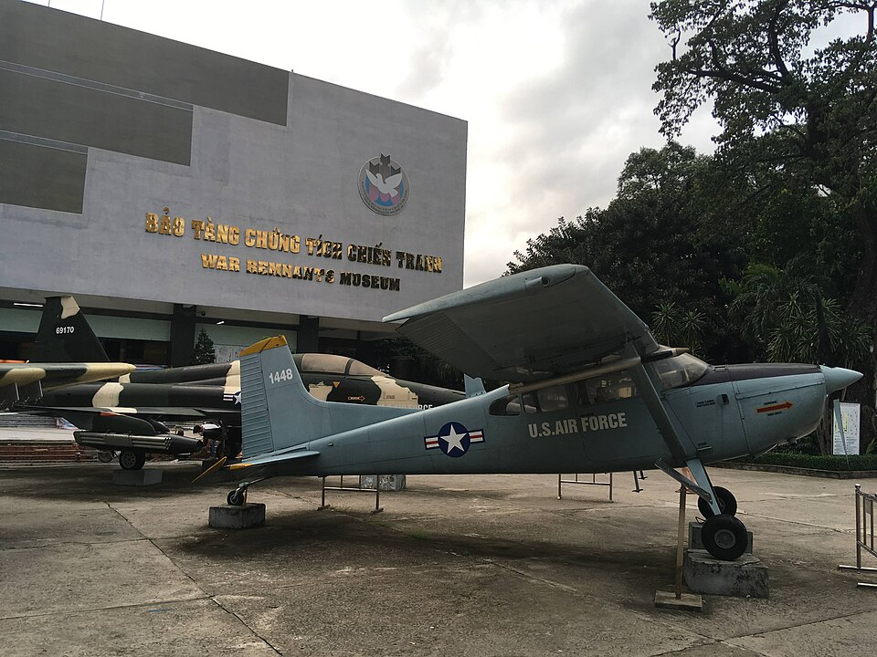
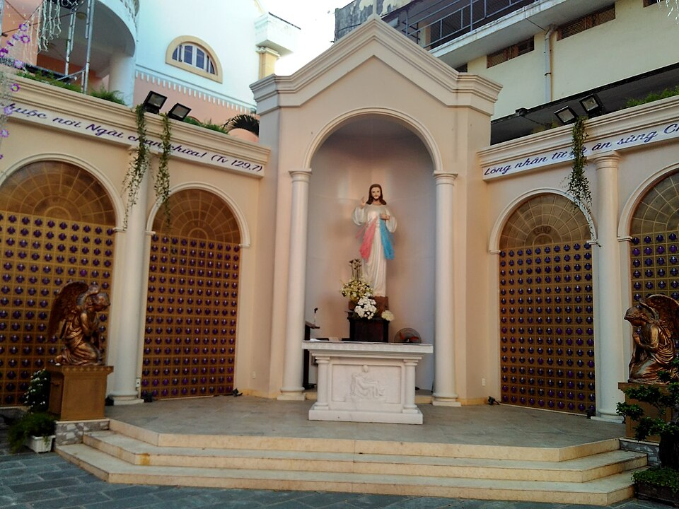
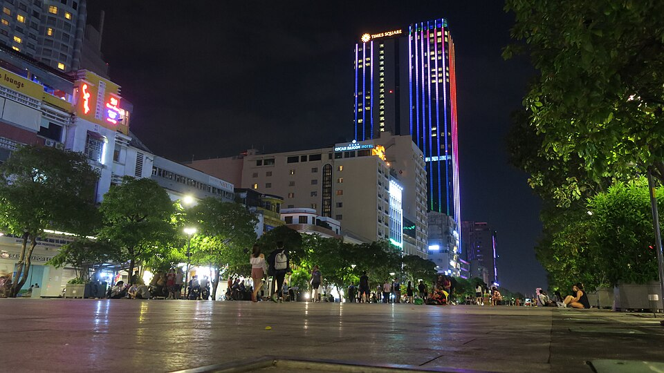
堤岸唐人街＋市區摩天景觀＋潮流逛街
上午走訪西貢最大華人聚落「堤岸」（Chợ Lớn）尋廟訪市，順道參拜市區玉皇殿，下午返回市中心登高俯瞰全城，晚上逛在地潮牌聚落。
天后廟 → 平西市場 → 玉皇殿 → 摩天觀景台 → The New Playground


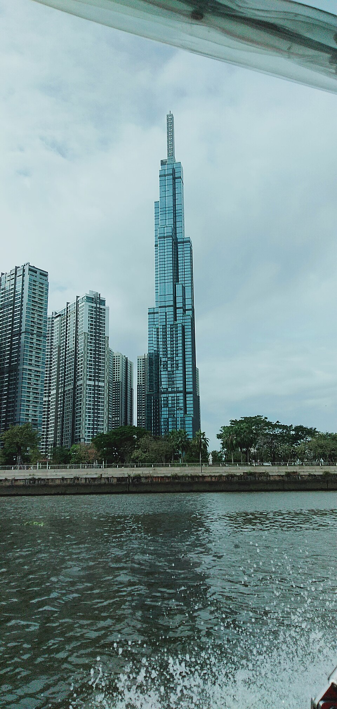
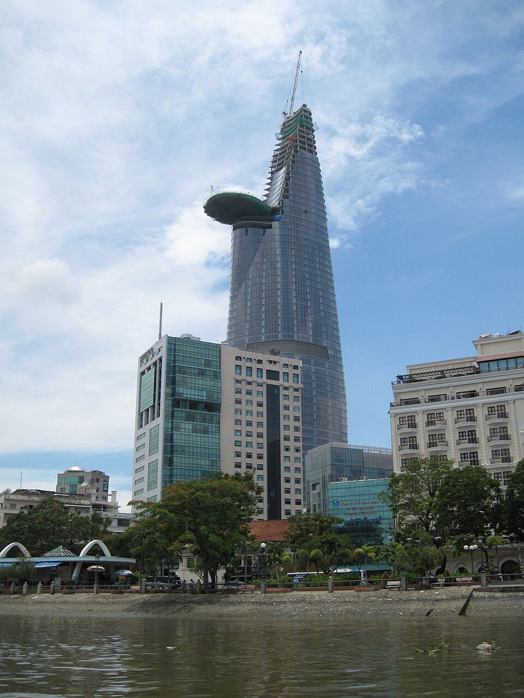
湄公河一日遊｜水上人家慢活體驗
最後一天前往湄公河三角洲，搭船穿梭紅樹林水道、拜訪果園與蜂場，體驗越南南部最道地的水上生活。
胡志明市 → 湄公河（美萩／檳椥） → 返回胡志明市
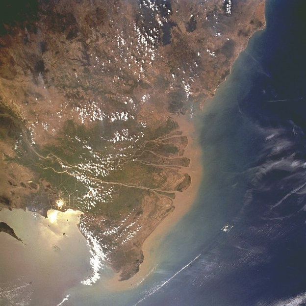
美食精選推薦
綜合 Google 評價、Michelin 指南與在地部落客推薦，精選幾間跨越街頭小吃到餐酒館的西貢代表店家，涵蓋不同預算與場合，可依行程動線就近安排。
🍲 在地經典美食
🍜 Phở Hòa Pasteur
1968 年開業的南越風味牛肉河粉老店，湯頭清甜濃郁，Michelin 指南「必比登推介」（Bib Gourmand）常客，觀光客與在地人都愛。
- 地址：260C Pasteur, Phường 8, Quận 3
- 營業時間：06:00–22:00
- 價位：約 85,000–150,000 VND／碗
🥖 Bánh Mì Huỳnh Hoa
西貢名氣最響亮的法國麵包店，一份就塞滿五、六種豬肉冷盤與肝醬，份量紮實澎湃，用餐尖峰時段常見排隊人龍。
- 地址：26 Lê Thị Riêng, Phường Phạm Ngũ Lão, Quận 1
- 營業時間：約 06:00–22:30
- 價位：約 42,000–65,000 VND／份
🥞 Bánh Xèo 46A
1945 年創立的越式煎餅專門店，Michelin 指南推薦，現點現煎金黃酥脆的米漿煎餅，包生菜與香草一起吃，油而不膩。
- 地址：46A Đinh Công Tráng, Phường Tân Định, Quận 1
- 營業時間：10:00–14:00、16:00–21:00
- 價位：約 60,000–100,000 VND／份
🏠 Cục Gạch Quán
老屋改建的復古庭院餐廳，主打南越家常菜，氛圍懷舊、擺盤精緻，深受外國旅人與在地饕客喜愛，建議提前訂位。
- 地址：10 Đặng Tất, Phường Tân Định, Quận 1
- 價位：約 150,000–300,000 VND／人
🍖 Quán Ụt Ụt（Oink Oink）
西貢河畔的人氣美式炭烤肋排餐廳，份量大、氣氛熱鬧，搭配在地精釀啤酒，很適合朋友聚餐或想換換口味時前往。
- 地址：168 Võ Văn Kiệt, Phường Cầu Ông Lãnh, Quận 1
- 價位：約 250,000–450,000 VND／人
☕ 咖啡＆甜點
☕ The Workshop Coffee
工業風挑高老公寓 2 樓改建的精品咖啡館，手沖與冷萃選豆講究，是西貢咖啡愛好者朝聖名店之一，Michelin 指南也曾推薦。
- 地址：27 Ngô Đức Kế, Phường Bến Nghé, Quận 1（2 樓）
- 價位：約 65,000–120,000 VND／杯
🍫 Maison Marou
越南本土可可豆手工巧克力品牌，曾被紐約時報譽為世界頂級巧克力之一，門市附設咖啡廳與巧克力甜點櫃，也是很棒的伴手禮採買點（詳見下方伴手禮指南）。
- 地址：167–169 Calmette, Phường Nguyễn Thái Bình, Quận 1
🌆 景觀餐酒／米其林
✨ Anan Saigon
名廚 Peter Cường Franklin 主理，Michelin 一星，位於老市場（Chợ Cũ）樓上，以現代手法重新詮釋越南街頭小吃，是西貢最國際化的餐廳之一，建議提前數週訂位。
- 地址：89 Tôn Thất Đạm, Phường Bến Nghé, Quận 1
- 營業時間：週二至週日 17:00 起（週一公休）
- 價位：套餐約 1,000,000 VND／人起
🍸 Saigon Saigon Rooftop Bar
Caravelle 飯店 10 樓露天酒吧，越戰時期曾是各國記者聚集地，可俯瞰阮惠步行街與歌劇院夜景，適合安排在某天晚餐後小酌看夜景。
- 地址：19–23 Lam Sơn Square, Caravelle Saigon, Quận 1
- 價位：調酒約 200,000–350,000 VND／杯
伴手禮採購指南
越南伴手禮的關鍵字是「咖啡、腰果、果乾」，以下依類型整理常見選項與參考價格，多數在超市或濱城市場都能一次買齊，最後一天再統一採買最不占行李空間。
☕ 咖啡類
- 中原咖啡 Trung Nguyên G7：三合一即溶咖啡，小包裝好分送，超市即可買到
- 越南烘豆：Highlands Coffee／The Coffee House 等品牌真空包裝豆，適合自己沖或送禮
- Phin 滴漏咖啡壺：鋁製約 50,000–100,000 VND，不鏽鋼款稍貴，濱城市場、超市都有賣
- 鼬鼠咖啡（貓屎咖啡）：多為調味咖啡而非純正麝香貓咖啡，價格若過低需留意真偽，建議在信譽商家或機場免稅店購買
🥭 零食類
- 腰果 Hạt điều：越南主要腰果產區之一，帶皮／去皮／蜂蜜／芥末等口味皆有，散裝約每公斤 200,000 VND 上下
- 果乾 Vinamit：商業包裝的芒果乾、菠蘿蜜乾、榴槤乾，方便帶回、通關無虞
- 椰子糖 Kẹo dừa Bến Tre：湄公河行程可現場採買，多種口味（原味、榴槤、巧克力）
- 綠豆糕 Bánh đậu xanh：傳統糕點伴手禮，甜度較高，適合配茶
- Marou 巧克力：越南本土可可豆製作，包裝精緻，較高單價的送禮首選
🧂 醬料調味
- 富國魚露 Nước mắm Phú Quốc：正宗南部魚露品牌，建議選小瓶商業密封包裝並放入託運行李
- 蝦鹽 Muối tôm Tây Ninh：西寧特產蝦鹽，沾水果、燙青菜都很搭
- 富國黑胡椒 Tiêu Phú Quốc：香氣濃郁的越南胡椒粒／胡椒粉
🎨 工藝紀念品
- 斗笠 Nón lá：經典越南斗笠，濱城市場周邊小攤最多選擇
- 絲綢圍巾／奧黛布料：第一郡多間絲綢專賣店，也可現場量身訂製奧黛
- 漆器、木雕小物：安東市場、濱城市場皆有工藝品專區
- 明信片、磁鐵：中央郵政局、書街周邊文創小物，輕巧好帶
🛍️ 推薦採購地點
🛒 Vincom Center Landmark 81（超市）
位於全越最高樓 Landmark 81 裙樓，內有 WinMart／Annam Gourmet 等超市，商品明碼標價、包裝完整，方便安排在 Day 2 登高賞景後順道採買。
⚠️ 通關與打包小提醒
- 液態品（魚露、蜂蜜、咖啡液等）隨身行李有 100ml 容量限制，建議購買小瓶商業密封包裝並放入託運行李
- 新鮮水果、生肉／肉乾肉鬆等含肉加工品，依規定不建議直接帶回台灣，購買前留意成分標示
- 果乾、腰果、咖啡、巧克力等優先選擇「完整加工＋原廠密封包裝」的商品，較不易在通關時被攔下
- 易碎品（Phin 咖啡壺、漆器）建議用衣物包裹並放置行李箱中間，減少托運碰撞破損風險
3 天門票＋交通抓算（每人）
不含機票、住宿、餐飲與購物，僅估算行程中會產生的門票與交通費用，實際依匯率與淡旺季調整。
| 項目 | 金額（VND） | 約合新台幣 |
|---|---|---|
| 統一宮門票 | 80,000 | 約 100 元 |
| 戰爭遺跡博物館門票 | 40,000 | 約 50 元 |
| 堤岸唐人街＋玉皇殿交通（來回 Grab） | 約 150,000–250,000 | 約 190–310 元 |
| 摩天觀景台門票（擇一） | 約 200,000–500,000 | 約 250–630 元 |
| 湄公河一日團（含車資、船資、門票、午餐） | 約 900,000–1,300,000 | 約 1,130–1,630 元 |
| 市內 Grab 交通（3 天） | 約 200,000–400,000 | 約 250–500 元 |
| 合計（每人，不含餐飲住宿） | 約 1,570,000–2,570,000 | 約 1,950–3,200 元 |
打包清單
點一點打勾，出發前確認都準備好了（勾選狀態僅存在瀏覽當下，重新整理頁面會重置）。
越南語小教室
會幾句簡單越南語，可以讓殺價與問路更順利，當地人也會感受到滿滿誠意。
| 你好 | Xin chào | 新造 |
| 謝謝 | Cảm ơn | 感恩 |
| 多少錢？ | Bao nhiêu tiền? | 包妞店 |
| 太貴了，便宜一點 | Đắt quá, bớt chút đi | 達誇，波句低 |
| 不要，謝謝（拒絕攬客） | Không, cảm ơn | 空，感恩 |
| 好吃 | Ngon | 嗯（短促鼻音） |
| 廁所在哪裡？ | Nhà vệ sinh ở đâu? | 娘為興噁哆 |
| 再見 | Tạm biệt | 但比也特 |